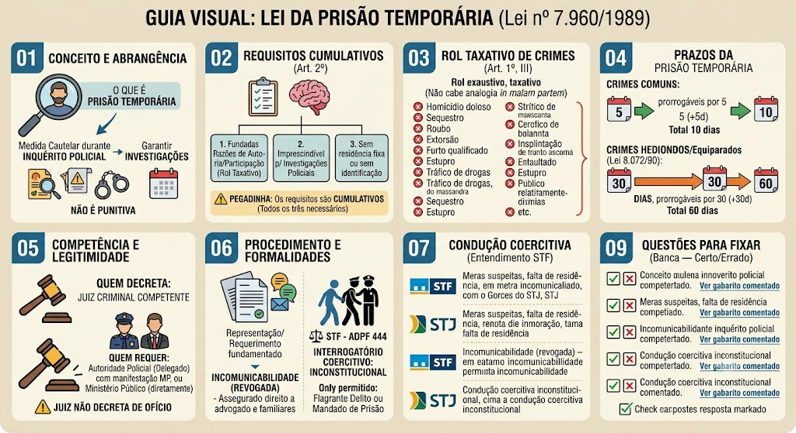

Prisão Temporária — Lei 7.960/1989
BR / 2026-10-13 / compilada (texto vigente)
Consultar fonte oficial Baixar cópia local
A redação desta cópia corresponde à versão identificada acima. Consulte a fonte oficial para conferir alterações posteriores e o recorte do seu edital.
Roteiro de leitura
- Hipóteses legais
- Requerimento e decisão
- Prazos, comunicação e garantias
Índice dos 7 dispositivos
Lei nº 7.960 de 21/12/1989
LEI Nº 7.960, DE 21 DE DEZEMBRO DE 1989
Dispõe sobre prisão temporária.
O PRESIDENTE DA REPÚBLICA
Faço saber que o Congresso Nacional decreta e eu sanciono a seguinte Lei:
Art. 1º Caberá prisão temporária: *(Vide ADIs nºs 3.360/2004 e 4.109/2008)*
I - quando imprescindível para as investigações do inquérito policial;
II - quando o indiciado não tiver residência fixa ou não fornecer elementos necessários ao esclarecimento de sua identidade;
III - quando houver fundadas razões, de acordo com qualquer prova admitida na legislação penal, de autoria ou participação do indiciado nos seguintes crimes:
a) homicídio doloso (art. 121, *caput,* e seu § 2º);
b) sequestro ou cárcere privado (art. 148, *caput,* e seus §§ 1º e 2º);
c) roubo (art. 157, *caput*, e seus §§ 1º, 2º e 3º);
d) extorsão (art. 158, *caput,* e seus §§ 1º e 2º);
e) extorsão mediante sequestro (art. 159, *caput,* e seus §§ 1º, 2º e 3º);
f) estupro (art. 213, *caput,* e sua combinação com o art. 223, *caput,* e parágrafo único);
g) atentado violento ao pudor (art. 214, *caput,* e sua combinação com o art. 223, *caput,* e parágrafo único);
h) rapto violento (art. 219, e sua combinação com o art. 223 *caput,* e parágrafo único);
i) epidemia com resultado de morte (art. 267, § 1º);
j) envenenamento de água potável ou substância alimentícia ou medicinal qualificado pela morte (art. 270, *caput,* combinado com art. 285);
l) quadrilha ou bando (art. 288), todos do Código Penal;
m) genocídio (arts. 1º, 2º e 3º da Lei nº 2.889, de 1º de outubro de 1956), em qualquer de suas formas típicas;
n) tráfico de drogas (art. 12 da Lei nº 6.368, de 21 de outubro de 1976);
o) crimes contra o sistema financeiro (Lei nº 7.492, de 16 de junho de 1986);
p) crimes previstos na Lei de Terrorismo. *(Alínea acrescida pela Lei nº 13.260, de 16/3/2016)*
Art. 2º A prisão temporária será decretada pelo Juiz, em face da representação da autoridade policial ou de requerimento do Ministério Público, e terá o prazo de 5 (cinco) dias, prorrogável por igual período em caso de extrema e comprovada necessidade.
§ 1º Na hipótese de representação da autoridade policial, o Juiz, antes de decidir, ouvirá o Ministério Público.
§ 2º O despacho que decretar a prisão temporária deverá ser fundamentado e prolatado dentro do prazo de 24 (vinte e quatro) horas, contadas a partir do recebimento da representação ou do requerimento.
§ 3º O Juiz poderá, de ofício, ou a requerimento do Ministério Público e do Advogado, determinar que o preso lhe seja apresentado, solicitar informações e esclarecimentos da autoridade policial e submetê-lo a exame de corpo de delito.
§ 4º Decretada a prisão temporária, expedir-se-á mandado de prisão, em duas vias, uma das quais será entregue ao indiciado e servirá como nota de culpa.
§ 4º-A. O mandado de prisão conterá necessariamente o período de duração da prisão temporária estabelecido no *caput* deste artigo, bem como o dia em que o preso deverá ser libertado. *(Parágrafo acrescido pela Lei nº 13.869, de 5/9/2019, publicada no DOU Edição Extra de 5/9/2019, em vigor 120 dias após a publicação)*
§ 5º A prisão somente poderá ser executada depois da expedição de mandado judicial.
§ 6º Efetuada a prisão, a autoridade policial informará o preso dos direitos previstos no art. 5º da Constituição Federal.
§ 7º Decorrido o prazo contido no mandado de prisão, a autoridade responsável pela custódia deverá, independentemente de nova ordem da autoridade judicial, pôr imediatamente o preso em liberdade, salvo se já tiver sido comunicada da prorrogação da prisão temporária ou da decretação da prisão preventiva. *(Parágrafo com redação dada pela Lei nº 13.869, de 5/9/2019, publicada no DOU Edição Extra de 5/9/2019, em vigor 120 dias após a publicação)*
§ 8º Inclui-se o dia do cumprimento do mandado de prisão no cômputo do prazo de prisão temporária. *(Parágrafo acrescido pela Lei nº 13.869, de 5/9/2019, publicada no DOU Edição Extra de 5/9/2019, em vigor 120 dias após a publicação)*
Art. 3º Os presos temporários deverão permanecer, obrigatoriamente, separados dos demais detentos.
Art. 4º O art. 4º da Lei nº 4.898, de 9 de dezembro de 1965, fica acrescido da alínea *i*, com a seguinte redação:
“Art. 4º .................................................................................................
i) prolongar a execução de prisão temporária, de pena ou de medida de segurança, deixando de expedir em tempo oportuno ou de cumprir imediatamente ordem de liberdade;”
Art. 5º Em todas as comarcas e seções judiciárias haverá um plantão permanente de vinte e quatro horas do Poder Judiciário e do Ministério Público para apreciação dos pedidos de prisão temporária.
Art. 6º Esta Lei entra em vigor na data de sua publicação.
Art. 7º Revogam-se as disposições em contrário.
Brasília, 21 de dezembro de 1989; 168º da Independência e 101º da República.
JOSÉ SARNEY
J. Saulo Ramos
Material de estudo: Lei nº 7.960/1989 — Prisão Temporária
Material complementar · Ver fonte no GitHub
Conceito e Abrangência
O que é a prisão temporária
A Lei nº 7.960/1989 institui a prisão temporária como medida cautelar de natureza administrativa, aplicável exclusivamente durante o inquérito policial. Seu objetivo é garantir as investigações, evitando que o suspeito destrua provas, fuja ou atrapalhe a apuração. Não tem caráter punitivo e deve cessar quando a necessidade desaparecer.
Situação prática
Durante investigação de um roubo qualificado, a polícia tem indícios de que João participou do crime, mas ele não tem residência fixa e pode fugir. O delegado representa ao juiz pela prisão temporária de João por 5 dias, prorrogáveis por mais 5, para colher provas sem interferência.
Requisitos Cumulativos (Art. 2º)
Requisitos legais
Para a decretação da prisão temporária, os seguintes requisitos devem estar presentes simultaneamente (não são alternativos):
- 1. Existirem fundadas razões de autoria ou participação do indiciado em um dos crimes previstos no rol taxativo da lei;
- 2. A prisão for imprescindível para as investigações policiais;
- 3. O indiciado não tiver residência fixa ou não fornecer elementos necessários ao esclarecimento de sua identidade.
Pegadinha
Os requisitos são cumulativos. Não basta apenas a suspeita; é necessário preencher todos os três. A ausência de qualquer um deles impede a decretação da prisão temporária.
Rol Taxativo de Crimes (Art. 1º, III)
Crimes que admitem prisão temporária
A prisão temporária só pode ser decretada para os crimes expressamente listados no art. 1º, III, da Lei 7.960/1989 (rol taxativo). Entre eles:
- Homicídio doloso (art. 121, CP);
- Sequestro e cárcere privado (art. 148, CP);
- Roubo (art. 157, CP);
- Extorsão (art. 158, CP);
- Furto qualificado (art. 155, §4º, CP);
- Estupro (art. 213, CP);
- Epidemia com resultado morte (art. 267, §1º, CP);
- Envenenamento de água ou alimentos (art. 270, CP);
- Falsificação de medicamentos (art. 273, CP);
- Tráfico de drogas (Lei 11.343/2006);
- Crimes contra o sistema financeiro (Lei 7.492/86);
- Crimes previstos na Lei de Terrorismo (Lei 13.260/2016) e na Lei de Organizações Criminosas (Lei 12.850/2013).
Rol taxativo
A lista é exaustiva. Não se admite prisão temporária para crimes que não estejam no rol, ainda que graves. A analogia in malam partem é vedada.
Prazos da Prisão Temporária
Prazo regra geral
Para os crimes comuns (não hediondos), o prazo da prisão temporária é de 5 dias, prorrogável por igual período (mais 5 dias), totalizando até 10 dias.
Prazo para crimes hediondos e equiparados
Para os crimes hediondos e equiparados (incluídos os listados na Lei 8.072/90), o prazo é de 30 dias, prorrogável por igual período (mais 30 dias), totalizando até 60 dias.
Esgotamento do prazo
Esgotado o prazo legal (com ou sem prorrogação), o preso deve ser imediatamente libertado, sob pena de constrangimento ilegal. A prisão temporária não pode se prolongar além do limite.
Competência e Legitimidade
Quem pode decretar e requerer
A prisão temporária é decretada exclusivamente pelo juiz criminal competente.
Legitimados para requerer:
- Autoridade policial (delegado), com manifestação prévia do Ministério Público;
- Ministério Público (diretamente).
O juiz não pode decretar de ofício (nem no inquérito, nem no processo).
Prazo para decisão do juiz
O juiz deve decidir sobre o pedido de prisão temporária no prazo máximo de 24 horas a contar do recebimento dos autos.
Procedimento e Formalidades
Representação ou requerimento
A prisão temporária é instaurada mediante:
- Representação da autoridade policial (com parecer do MP); ou
- Requerimento do Ministério Público.
Ambos devem ser fundamentados, indicando os elementos de prova e a necessidade da medida.
Incomunicabilidade (revogada)
A lei original previa a possibilidade de incomunicabilidade do preso temporário, mas esse dispositivo foi totalmente revogado por ser inconstitucional (viola o direito de defesa e a CF). Atualmente, o preso temporário tem direito a comunicação com advogado e familiares.
Condução Coercitiva (Entendimento do STF)
STF — ADPF 444
O Supremo Tribunal Federal firmou entendimento de que a condução coercitiva de investigados para interrogatório é inconstitucional. A pessoa só pode ser levada à delegacia de forma coercitiva se houver:
- Flagrante delito; ou
- Mandado de prisão (temporária, preventiva ou em decorrência de condenação).
Assim, a condução coercitiva não pode ser usada como substituta da prisão temporária ou preventiva.
Jurisprudência Relevante (STF/STJ)
Entendimentos consolidados
Os tribunais superiores pacificaram os seguintes entendimentos:
- STJ: A prisão temporária não pode ser decretada com base em meras suspeitas; exige-se fundadas razões, lastreadas em elementos concretos de autoria ou participação.
- STJ: A falta de residência fixa, por si só, não é suficiente para a prisão temporária; é necessário que a imprescindibilidade para as investigações também esteja demonstrada.
- STF (ADI 1.849): A incomunicabilidade do preso temporário foi revogada, sendo assegurado o direito à assistência de advogado.
- STF (ADPF 444): A condução coercitiva para interrogatório é inconstitucional, não podendo ser utilizada como meio de obtenção de prova.
Mapa-mental
